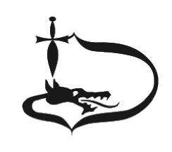

|  |
Through his mother, Isabel (daughter of Sigismund I of Poland), he was related to the Jagiello dynasty. As an infant, he was crowned king of Hungary on his father's death (1540). John and Isabel received the principality of Transylvania under Ottoman suzerainty, but actual power was held by John's guardian, the monk George Martinuzzi, who sought to restore a unified Hungary. In 1551, Martinuzzi procured the deposition of John and Isabel and reunited Transylvania with Hungary, recognizing Ferdinand of Austria and Bohemia (later Holy Roman Emperor Ferdinand I) as king. Martinuzzi, made prince-primate and a cardinal, soon fell out with Ferdinand, who had him assassinated. |